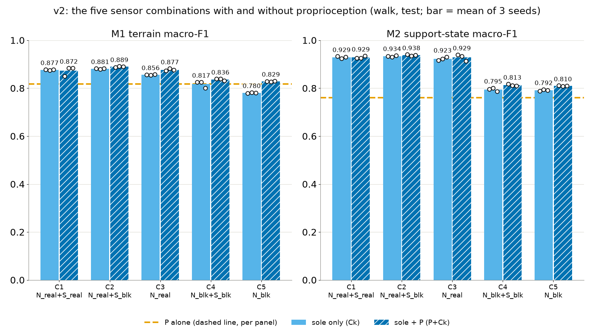
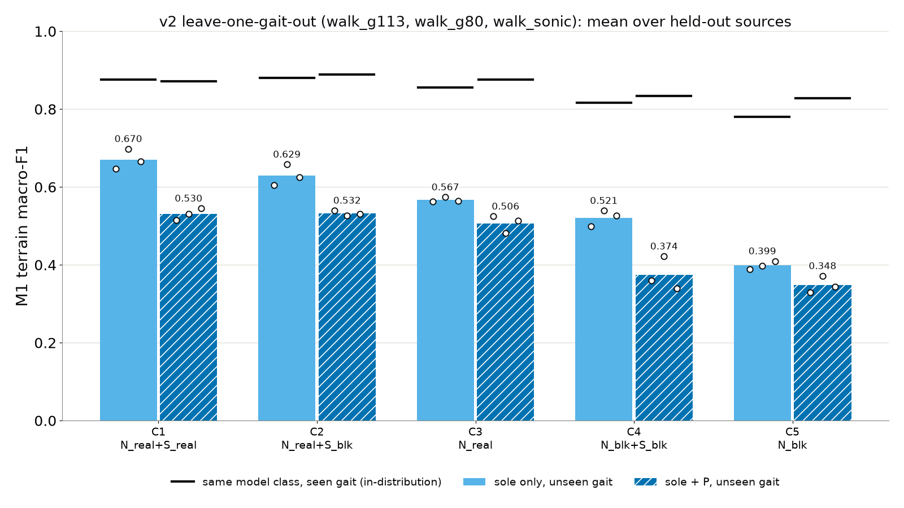
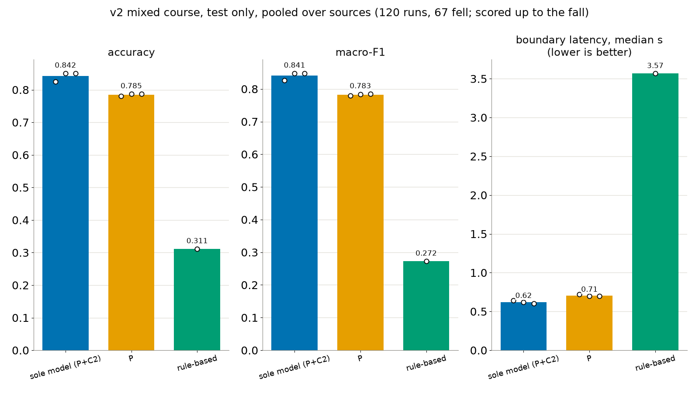
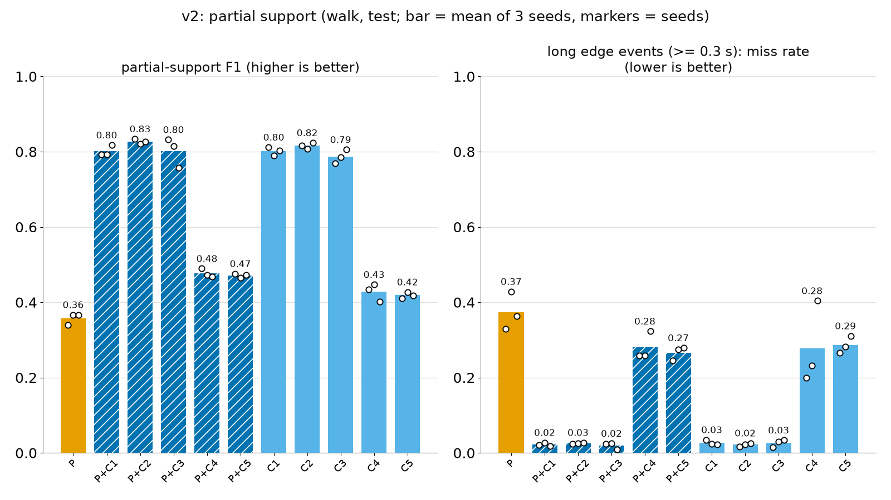
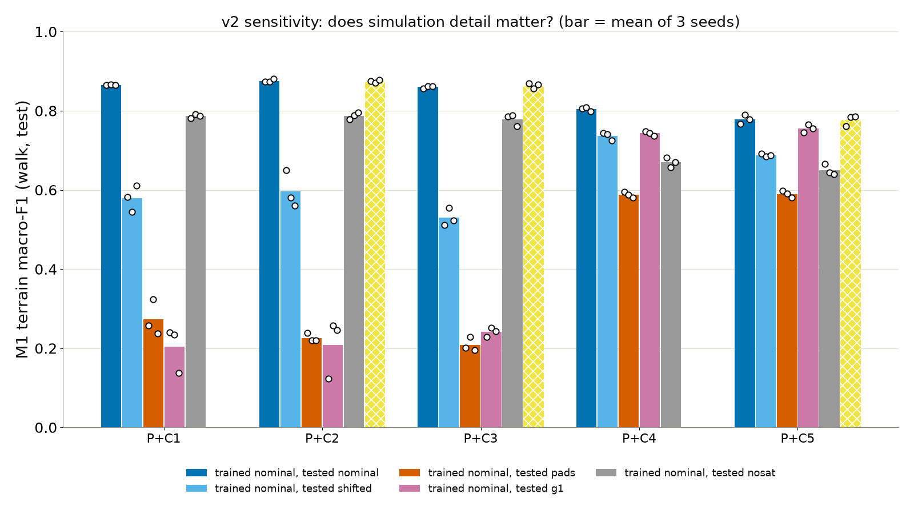

Terrain from Touch: the second simulation run
The Booster K1 in MuJoCo with a pressure-map sole: 19 × 8 points per foot, read on top of rigid contact. Seven questions, fixed in advance with one rule for what counts as a real difference: map against four pressure blocks, the value of shear, unseen gaits, a mixed-terrain course, partial support, and whether any of it survives a change in how the sole is simulated.
In short
- Read this first. The point map's advantage over four pressure blocks is large in this simulation and does not survive a change in how the map is produced. Point-map models trained on one sole setting and tested on another lose most of their accuracy; block models lose much less.
- On the main data the map wins on every metric: terrain F1 0.877 against 0.829, partial-support F1 0.802 against 0.471, long edge events missed 2.0 % against 26.6 %.
- Shear adds little. Block shear on top of the map: no difference with joints and IMU. Per-point shear here has no content of its own.
- Sole-only models transfer better to an unseen gait for all five sole inputs: mean 0.629 against 0.532; on the human-like gait 0.526 against 0.071.
- On a mixed course the sole model beats joints and IMU alone (accuracy 0.842 against 0.785) and hand-written rules (0.311).
- A real recording is needed before a fine pressure map can be trusted over block sums.
The seven answers
Inputs: P is joints and IMU (no walking command). The five sole inputs, each with and without P: C1 point map plus per-point shear; C2 point map plus block shear; C3 point map only; C4 four pressure blocks per foot plus block shear; C5 four pressure blocks only. All come from one recording. Walking, test split, mean of three seeds unless stated. The metric definitions and the rule for calling a difference real were fixed before the dataset existed.
| # | Question | Answer by the rule | Key numbers |
|---|---|---|---|
| 1 | Does the pressure map beat four pressure blocks? | Yes on the main dataset, on every metric; not robust (question 7). | P+C3 against P+C5: terrain F1 0.877 against 0.829, support F1 0.929 against 0.810, partial-support F1 0.802 against 0.471, friction MAE 0.156 against 0.174, long edge events missed 2.0 % against 26.6 % |
| 2 | Does block shear add anything on top of the map? | No difference with joints and IMU. Without them, terrain F1 is better and nothing else. | P+C2 against P+C3: 0.889 against 0.877 terrain F1, inside the rule's 2-point floor. C2 against C3: 0.881 against 0.856 |
| 3 | Does per-point shear add anything over block shear? | No, with two exceptions with joints and IMU (friction better, partial support worse), and the simulator cannot test this question. | P+C1 against P+C2: friction MAE 0.141 against 0.158 (better), partial-support F1 0.801 against 0.827 (worse); all else no difference. Per-point shear here is the foot's total shear shared out by pressure |
| 4 | Do sole-only models transfer to an unseen gait better than models with joints and IMU? | Yes, for all five inputs. | Mean terrain F1 on the held-out gait, C2 against P+C2: 0.629 against 0.532. On held-out SONIC: 0.526 against 0.071 |
| 5 | On a mixed course, how much better is the sole model than joints and IMU, and than rules? | Better than both on accuracy, F1 and latency. | Selected model P+C2: accuracy 0.842, boundary latency 0.62 s. P: 0.785 and 0.71 s. Rule-based: 0.311 and 3.57 s, half the boundaries missed |
| 6 | Partial support on edge events of 0.3 s or longer? | The point map detects them; blocks and joints miss a quarter to a third. | Missed long events: P 37.3 %, block inputs 26.6–28.0 %, point-map inputs 2.0–2.6 %. Shear does not change the detection of long events; its one real effect is the lower partial-support F1 of P+C1 |
| 7 | Do the answers survive a change of simulation detail? | Answers 2 and 3 survive on the three metrics tested (terrain F1, support F1, friction MAE). Answer 1 does not. | Point-map models trained on the nominal sole fall from terrain F1 0.86–0.88 to 0.53–0.60 with shifted sensor parameters and to 0.20–0.27 on the pad sole and the foot-outline mask; block models fall to 0.59–0.76 |
Reading the table. On the main data the map wins and the size of the win is in support state, not terrain class. But answer 7 undercuts answer 1: point-map models trained on one sole setting lose most of their accuracy on another (up to 22 points lost for block models on the pad sole, 2 to 9 elsewhere, far more for map models). The simulation supports "a pressure map carries useful geometry about what is under the foot"; it cannot yet tell how much of that will hold on the real sole.
- Three walking sources, not four. A new velocity policy was parked after three fixes without measurable progress (section 11). Everything uses G113 and G80, two ordinary flat-foot walking policies, and SONIC, human-like heel-to-toe walking.
- While walking, the simulated foot still loads its corners. The rigid foot is a box that rocks on its edges, so at heel strike and toe-off two to four corner points carry the load and reach the sensor model's 60 N limit. Standing and the hand-press rig show an evenly loaded front and back, as described for the real sole; walking does not. This is the most visible difference between the renders and a real sole.
- Brief touches of an edge are mostly missed by everything. Edge events shorter than 0.3 s are missed 74–76 % of the time with the point map and 82–85 % without it.
What changed since the first run
| First run | Second run | |
|---|---|---|
| Sole | 2 × 4 rigid zones per foot, forces taken per zone from the contact solver | Contact: four rigid blocks (front and back, each split into left and right) and a middle raised 1 mm. Reading: 19 × 8 points at 10 mm per foot (152), rebuilt from the foot's total force and moment |
| Sensor views | zones: normal force N, shear S | map and per-point shear; four blocks with block shear; all from one recording |
| Sensor parameters | one fixed setting | random per episode (boundaries, clearance, layer compliance, neighbour spread, crosstalk, gain, offset, noise, quantisation), plus fixed settings for the sensitivity test |
| Joints and IMU (P) | joints, IMU, command | joints, IMU; no command (one diagnostic run with it) |
| Models | temporal CNN | same temporal CNN; point maps first pass a small masked 2D encoder per foot and frame. Weights of all 156 models saved |
| Dataset | 24.7 h, 4,572 episodes | 33.2 h, 6,139 episodes (train 21.9 h, validation 3.2 h, test 8.1 h), plus a test-only hard-mid set (friction 0.36–0.7), per-foot ground labels, sensitivity sets and 120 course runs |
| New tests | leave-one-gait-out with and without P; a mixed-terrain course against P and a rule-based detector; sensitivity of the conclusions to the sole model | |
| Gate | three pass/fail thresholds | no gate; seven questions with one rule, fixed in advance, for a real difference |
Reading the table. The first run asked one pass/fail question about zone shear (first run). This run changes the sole model, removes the command from P, adds a third more data and asks seven narrower questions, including whether the answers depend on how the sole is simulated.
Setup, with what is approximate
- Contact geometry. Rigid, the same outer box as before (180 × 70 mm), so the walking policies see the heel and toe edges they were trained on. Front and back parts carry load; the middle is 1 mm higher. Boundaries default to thirds and are randomised per episode. All three sources were checked on the new foot on flat hard-grip: 0 falls in 64 episodes each, forward speed within 0.1 % of the first run.
- The K1 foot mesh (the model wears shoes) shows a flat heel, then a 16 mm long groove 4–15 mm deep, then a flat front with toe spring. That "middle" is a groove, not a third of the length. Thirds were kept as planned; the random range of the boundaries covers the mesh value.
Why the map is rebuilt from the foot's total force
The plan assumed the rigid simulator gets each region's total force right. Measured on G113 walking on flat ground, it does not: one block carries over 95 % of a foot's load in 33–38 % of loaded physics steps, and the whole load can move to another block within one 2 ms step. For flat parts of one rigid body the split is statically indeterminate, and the solver's choice is an artefact, the same one that put the load in one corner zone in the first run. What the dynamics do determine is the foot's total force, its centre of pressure and the twist about it. The map is rebuilt from those at every physics step: a thin elastic layer on a rigid plane, pressure at a point proportional to how far the plane presses into the layer given the ray-cast gap to the ground under that point, with the plane's height and two tilts solved so that total force and centre of pressure match the simulator exactly. Then the sensor model: neighbour spread, crosstalk, per-point gain and offset, noise, a 60 N per-point limit, quantisation, 150 Hz to 50 Hz.
Consequences, stated as limits of this simulator
- Block forces and block shear are sums over the rebuilt map, not solver outputs.
- Per-point shear has no independent content. It is the foot's total shear shared in proportion to pressure, plus a twist term: all shear comes from three numbers per foot. Question 3 therefore tests noise handling and encoding, not physics. Per-point shear alone even reaches support F1 0.879, because it carries the pressure pattern.
- On flat ground the map is a function of total force and centre of pressure. What it adds over blocks is the ground geometry under the foot: bumps, voids, edges.
- Point mask. A 19 × 8 rectangle (152 points per foot) on the contact box, not a foot-shaped mask of about 100 points: the rigid foot touches at its box corners and a foot-shaped mask has no points there. The foot outline, traced from a screenshot, is one arm of the sensitivity test and is drawn in the renders.
- Layer compliance was lowered from 0.5 to 0.2 mm per 100 N after the pilot, because with 0.5 mm the middle carried 5–6 % of the load while walking on flat ground. With 0.2 mm it carries 3.4–4.1 % on average (median 0; 0 when standing). "The middle does not touch flat ground" holds when standing and for most of the stance, not all of it.
Sole checks, 17 of 17 passed
The six checks of the first run on the new geometry; standing, no point above 1.0 % of the foot's load (limit 15 %) and the middle at 0.00 % (limit 5 %); centre of pressure from the map within 0.006 mm of the simulator's (limit 5 mm); a 5 mm bump under the middle raises its share to 80 %; half over an edge, points over the void read exactly zero before noise and the support fraction matches ground truth; the sum over points equals the foot force within 0.0009 % (limit 1 %). "Load shared by many points" had no number in the plan; the rule used is "at least half the points of the front and of the back carry at least half the uniform share" (measured 100 %), which replaced a first rule that no even spread could meet.
Data, training and the rule-based detector
- Dataset (8.0 GB). The same six classes and separate friction and stiffness bands per split as the first run. Walking with G113, G80 and SONIC, plus standing, foot rig, lifted and surface-change strips. 310 falls in 5,869 walking, standing and lifted episodes, kept up to the fall. The validator passes on every episode; no terrain instance, band or raw array is shared between splits (checked three times, independently).
- Training. Point-map models at first memorised each episode's fixed per-point gain and offset (training F1 0.98, validation 0.75 after one epoch). Every sole input is therefore trained with a fresh random gain (sd 0.1) and offset (sd 0.3 N) per window; validation and test data are not perturbed.
- Rule-based detector. Hand-written rules on kinematic foot slip in double support, joint tracking error, stance-foot tilt and its scatter, foothold height difference and a contact estimate, thresholds fitted on the training split only. It never outputs "soft". Terrain F1 0.285 on the test split.
Main results
Walking, test split, mean of three seeds. Edge events are partial-support events on edges; long means 0.3 s or more.
| Input | Terrain F1 | Support F1 | Partial F1 | Friction MAE | Grip/slip F1 | Strip latency, s | Long edge missed | Short edge missed | Lifted delay, s |
|---|---|---|---|---|---|---|---|---|---|
| P | 0.817 | 0.760 | 0.358 | 0.181 | 0.948 | 0.64 | 0.373 | 0.845 | 0.30 |
| P+C1 (map + point shear) | 0.872 | 0.929 | 0.801 | 0.141 | 0.949 | 0.35 | 0.022 | 0.743 | 0.11 |
| P+C2 (map + block shear) | 0.889 | 0.938 | 0.827 | 0.158 | 0.978 | 0.36 | 0.026 | 0.755 | 0.11 |
| P+C3 (map) | 0.877 | 0.929 | 0.802 | 0.156 | 0.957 | 0.38 | 0.020 | 0.744 | 0.10 |
| P+C4 (blocks + block shear) | 0.836 | 0.813 | 0.477 | 0.176 | 0.969 | 0.49 | 0.280 | 0.816 | 0.11 |
| P+C5 (blocks) | 0.829 | 0.810 | 0.471 | 0.174 | 0.945 | 0.51 | 0.266 | 0.820 | 0.12 |
| C1 | 0.877 | 0.929 | 0.802 | 0.141 | 0.967 | 0.33 | 0.027 | 0.757 | 0.10 |
| C2 | 0.881 | 0.934 | 0.816 | 0.156 | 0.977 | 0.39 | 0.022 | 0.751 | 0.10 |
| C3 | 0.856 | 0.923 | 0.786 | 0.170 | 0.957 | 0.47 | 0.026 | 0.747 | 0.10 |
| C4 | 0.817 | 0.795 | 0.428 | 0.175 | 0.963 | 0.50 | 0.278 | 0.826 | 0.11 |
| C5 | 0.780 | 0.792 | 0.419 | 0.193 | 0.919 | 0.57 | 0.286 | 0.854 | 0.10 |
| Block shear alone | 0.793 | 0.746 | 0.313 | 0.172 | 0.947 | 0.58 | 0.366 | 0.854 | 0.35 |
| Per-point shear alone | 0.857 | 0.879 | 0.674 | 0.165 | 0.961 | 0.41 | 0.050 | 0.758 | 0.20 |
Reading the table. The clearest line runs between map inputs (C1 to C3) and block inputs (C4, C5): partial-support F1 0.786 to 0.827 against 0.419 to 0.477, share of long edge events missed 0.020 to 0.027 against 0.266 to 0.286. Terrain F1 differs much less. Strip latency in steps is 2.00 for every input without the point map and 1.33–2.00 with it; with three seeds of integer medians that is not a real difference by the rule.

Map, block shear, point shear (questions 1 to 3)
Question 1: map against blocks
A real difference on all five metrics, with and without joints and IMU. The size is in support state, not terrain class: partial-support F1 goes from 0.47 to 0.80 and long edge events missed from 27 % to 2 %, while terrain F1 gains 5 points. The per-foot labels show where: on edge terrain, windows in which a foot was actually on an edge are recognised 94 % of the time with the map and 59–65 % without. A window of edge or rough terrain in which no foot touched an edge or a bump is recognised much less often by every input (edge 28–43 %, rough 8–18 %), which supports what the first run could only assert: part of the class error is in the label, not in the sensing. The per-foot labels are for analysis only.
Question 2: block shear on top of the map
With joints and IMU: no difference on terrain F1 (+1.3 points, under the 2-point floor), support F1, friction MAE, strip latency or grip/slip F1. Without them, terrain F1 is really better (+2.6 points) and nothing else. The first run's friction effect of shear is not there: 0.158 against 0.156.
Question 3: per-point shear over block shear
No difference, except friction MAE with joints and IMU (0.141 against 0.158, real by the rule) and partial-support F1, which is really worse (0.801 against 0.827). Without joints and IMU the friction difference is the same size (0.141 against 0.156); it passes the spread test and misses the 10 % floor by a hair (0.0152 against 0.0156), so by the rule it is no difference. Given how per-point shear is built here, this is an effect of feeding the same information in a different encoding. It says nothing about the real sensor's per-point shear.
An unseen gait (question 4)
Train on two gaits, test terrain F1 on the third.
| Input | G113 held out | G80 held out | SONIC held out | Mean | Same input, gait seen |
|---|---|---|---|---|---|
| P+C1 | 0.798 | 0.673 | 0.120 | 0.530 | 0.872 |
| P+C2 | 0.841 | 0.686 | 0.071 | 0.532 | 0.889 |
| P+C3 | 0.788 | 0.633 | 0.098 | 0.506 | 0.876 |
| P+C4 | 0.488 | 0.554 | 0.079 | 0.374 | 0.834 |
| P+C5 | 0.498 | 0.481 | 0.066 | 0.348 | 0.828 |
| C1 | 0.779 | 0.715 | 0.516 | 0.670 | 0.876 |
| C2 | 0.717 | 0.644 | 0.526 | 0.629 | 0.881 |
| C3 | 0.653 | 0.629 | 0.418 | 0.567 | 0.855 |
| C4 | 0.623 | 0.578 | 0.363 | 0.521 | 0.816 |
| C5 | 0.466 | 0.490 | 0.240 | 0.399 | 0.780 |
Reading the table. Sole-only models are really better on the held-out mean for every input. Most of the gain comes from SONIC: with joints and IMU in the input, a model that never saw SONIC scores 0.07–0.12 on it, the level of the shuffled-label control; without them it scores 0.24–0.53. Between the two velocity policies, which move alike, the picture is mixed: with the map, joints and IMU help on held-out G113 (P+C2 0.841 against C2 0.717); with block pressure and block shear they hurt there (P+C4 0.488 against C4 0.623); with block pressure alone they make little difference (P+C5 0.498 against C5 0.466). Every model still loses 21 to 48 points against a gait it has seen. The first run's conclusion stands and is sharper: the controller that will run on the real robot must be in the training data, and joints and IMU are the part of the input that ties a model to a gait.

The mixed course (question 5)
120 recorded runs, 40 courses per walking source, test only: six types of ground chunk in random order, planned length 60–69 s, completed runs 70–80 s. No source reached the planned 80 % of completed courses: every chunk was crossed in 19 of 40 runs by G113, 22 by G80 and 6 by SONIC (SONIC stays up in 12, but in six of those it does not reach the last chunk: its clips turn and wander as well as walk slowly). All runs are scored up to the fall, as planned. The sole model was selected on validation data before any course result: P+C2 (validation terrain F1 0.884; runner-up P+C3 0.880).
| Detector | Accuracy | Macro-F1 | Support F1 | Boundary latency, s | Steps | Boundaries missed |
|---|---|---|---|---|---|---|
| Sole model P+C2 | 0.842 | 0.841 | 0.928 | 0.62 | 2 | 0.7 % |
| P only | 0.785 | 0.783 | 0.776 | 0.71 | 2 | 1.3 % |
| Rule-based | 0.311 | 0.272 | 0.633 | 3.57 | 8 | 49.9 % |
Reading the table. The sole model is really better than P on accuracy (+5.7 points), macro-F1 (+5.8) and median latency (0.09 s earlier); in steps both detect the new ground on the second step in the pooled data (P needs three steps on SONIC). The largest gap is on SONIC (accuracy 0.812 against 0.699, latency 0.62 s against 0.89 s). The rule-based detector is far behind both: its tracking-error rule fires on SONIC's low-gain controller for the whole run, and it has no rule that separates soft ground. A learned model on signals the controller already has is a much stronger baseline than hand rules.

Partial support and unseen friction (question 6)
| Input | Long events missed | Median delay, s | Partial-support F1 | Short events missed |
|---|---|---|---|---|
| P | 37.3 % | 0.12 | 0.358 | 84.5 % |
| P + blocks (C4, C5) | 26.6–28.0 % | 0.12–0.13 | 0.47–0.48 | 81.6–82.0 % |
| P + point map (C1–C3) | 2.0–2.6 % | 0.10 | 0.80–0.83 | 74.3–75.5 % |
Reading the table. The point map catches almost every edge contact that lasts 0.3 s or more; blocks and joints miss a quarter to a third of them. Brief contacts are missed by everything. Shear makes no difference to any of these numbers.

hard-mid: friction 0.36–0.7, never seen in training
Friction MAE: P 0.140, P+C5 0.159, P+C3 0.128, P+C2 0.109, C1 0.107. Models assign these windows to hard-grip in 53–64 % of cases and to hard-slip in 27–39 %. The friction estimate interpolates into the unseen range about as well as it works inside the trained ranges, and shear inputs give the lowest errors here: the one place in this run where shear shows a consistent benefit. It was not one of the comparisons fixed in advance, so it is an observation.
Does simulation detail pay off? (question 7)
Models trained on the fixed nominal sole, tested on the same test simulations read in five ways. Terrain F1; support F1 behaves alike.
| Input | Nominal | Shifted parameters | Pad sole | Foot-outline mask | No saturation |
|---|---|---|---|---|---|
| P+C1 | 0.865 | 0.579 | 0.273 | 0.204 | 0.786 |
| P+C2 | 0.876 | 0.597 | 0.226 | 0.209 | 0.788 |
| P+C3 | 0.860 | 0.530 | 0.209 | 0.241 | 0.779 |
| P+C4 | 0.805 | 0.737 | 0.588 | 0.743 | 0.670 |
| P+C5 | 0.778 | 0.688 | 0.590 | 0.755 | 0.650 |
Reading the table. Answer 1 flips: on shifted parameters, the pad sole and the outline mask, the block models are really better than the point-map models on terrain F1, and on the pad sole and the outline mask also on support F1. Answers 2 and 3 hold on all five test sets: no difference. The 60 N limit does not decide answers 1 and 2: trained and tested without saturation, the verdicts are the same as nominal (P+C3 0.864 against P+C5 0.776). Questions 3 to 6 were not rerun without the limit. A model trained with saturation and tested without loses 8–14 points, so the per-point range of the real sensor must be known before training for it.

On the point "a fine pressure map beats four blocks", the simulation cannot be trusted until real recordings exist. A point-map model learns the reading method along with the ground. Block sums are much less sensitive to it, and that robustness is itself an argument for them, or for training on real data.
Exploratory, after the verdict: why the point-map models fail there
Not part of the seven answers. The main models, trained on per-episode random sensor parameters, tested on the same five sets (terrain F1):
| Model | Training | Nominal | Shifted | Pad sole | Outline mask | No saturation |
|---|---|---|---|---|---|---|
| P+C2 | randomised | 0.895 | 0.884 | 0.266 | 0.127 | 0.827 |
| P+C2 | nominal only | 0.876 | 0.597 | 0.226 | 0.209 | 0.788 |
| P+C3 | randomised | 0.884 | 0.869 | 0.212 | 0.133 | 0.797 |
| P+C3 | nominal only | 0.860 | 0.530 | 0.209 | 0.241 | 0.779 |
| P+C5 | randomised | 0.838 | 0.820 | 0.643 | 0.824 | 0.797 |
| P+C5 | nominal only | 0.778 | 0.688 | 0.590 | 0.755 | 0.650 |
Reading the table. Randomising the sensor parameters buys robustness to those parameters: on shifted parameters the point-map models recover from 0.53–0.60 to 0.87–0.88. It does not buy robustness to how the map is formed: on the pad sole and the outline mask the randomised models fail as badly as the nominal ones.
- What differs in the inputs there (walking frames with load): the same share of load in the corner points on the pad sole, but the load sits on fewer points (90 % of it on 34 points for pads and 25 for the outline mask, against 42) and neighbouring points differ more. The outline mask also removes the corner and edge points where the box foot puts its load (25 % of the load in the outer ring against 63 %). For the outline mask, which reads the same simulations, the block sums stay close to nominal (correlation 0.96, median difference 16 %); for the pad sole, a different simulation, only the distributions can be compared (overlap 0.93–0.94).
- Reading. The point-map models use the fine spatial shape that the elastic-layer reconstruction produces. Whether a real sole produces that shape is what the simulation cannot say. A real recording would settle it with four numbers: how many taxels carry 90 % of the load at heel strike, mid-stance and toe-off; the share of load at the edges; how much neighbouring taxels differ; the per-taxel range.
First run against second run
Not a like-for-like comparison: the sole, the sensor model, the command input, the dataset size and the network all differ. Both runs use the same three walking sources, classes, bands and metric code.
| Run | Input | Terrain F1 | Support F1 | Partial F1 | Friction MAE | Strip latency, s | Lifted delay, s |
|---|---|---|---|---|---|---|---|
| First | P with command | 0.802 | 0.755 | 0.353 | 0.186 | 0.67 | 0.29 |
| First | P+N (2 × 4 zone Fz from the solver) | 0.861 | 0.866 | 0.633 | 0.166 | 0.52 | 0.07 |
| First | P+N+S | 0.860 | 0.853 | 0.599 | 0.150 | 0.55 | 0.08 |
| Second | P, no command | 0.817 | 0.760 | 0.358 | 0.181 | 0.64 | 0.30 |
| Second | P with command (diagnostic) | 0.818 | 0.765 | 0.369 | 0.180 | 0.62 | 0.27 |
| Second | P+C5 (four block Fz from the map) | 0.829 | 0.810 | 0.471 | 0.174 | 0.51 | 0.12 |
| Second | P+C4 (plus block shear) | 0.836 | 0.813 | 0.477 | 0.176 | 0.49 | 0.11 |
| Second | P+C2 (point map plus block shear) | 0.889 | 0.938 | 0.827 | 0.158 | 0.36 | 0.11 |
Reading the table. P reproduces across the two runs, with or without the command. The first run's eight zones per foot scored higher than this run's four blocks. The two differ in resolution and in where the numbers come from (the first run read the solver's per-zone forces, which this run showed to be unreliable while walking), so the gap cannot be assigned to one cause. The first run's friction gain from zone shear (0.166 to 0.150) is not reproduced by block shear here (0.174 against 0.176 for blocks, 0.156 against 0.158 for the map); per-point shear does lower the friction error (0.141 against 0.158, question 3). With joints and IMU in the input, neither run found a shear effect on terrain class or support state; without them, this run found one on terrain class (question 2).
A new walking policy (parked)
A fourth walking source was trained in Isaac Lab, warm-started from G113, with generated terrain (rough, slopes to 10°, stepping stones, 3–6 cm platforms) and friction 0.1–1.0. The acceptance rule, fixed before the evaluation that mattered: every chunk crossed in at least 16 of 20 baseline courses, then at least 80 % of 40 fresh courses.
| Stage | What changed | Best checkpoint | Crossed, of 20 | No fall, of 20 |
|---|---|---|---|---|
| Baseline | existing policies G113 / G80, same courses | – | 7 / 14 | 7 / 14 |
| Start | G113 recipe plus generated terrain, warm start | 200 | walked at 0.13 m/s and lost speed tracking | |
| Fix 1 | command curriculum off, terrain promotion by distance walked | 500 / 1000 | 14 / 11 | 13 / 15 |
| Fix 2 | more stepping stones and gaps, stricter promotion | 300 | 0 | 2 |
| Fix 3 | from fix 1 at 1000: its terrain mix with a slightly larger plank share (0.20 against 0.15; fix 2 had 0.24), no gaps, smaller policy step, more weight on forward speed | 500 | 10 | 16 |
Reading the table. Three different fixes, none within reach of 16 of 20, and the last within chance of the first: parked. The remaining failures are falls on plank chunks and slowing down on terrain. The evaluated checkpoints are not used anywhere in this run.
Integrity, approximations, failures
Verified independently
- An independent evaluation recomputed terrain F1, support F1, partial F1 and friction MAE for eight seed-0 models from the raw test episodes with its own code: equal to four decimals.
- Saved weights reproduce the stored predictions on 139,410 test windows (two models checked independently; all 156 models by the training code, 0 mismatches).
- A model trained on shuffled terrain labels scores 0.062 (real model 0.887).
- A shortcut check on the large partial-support gain found none: unloaded points read offset plus noise (about 0.25 N in partial-support frames; 0.06 ± 0.24 N over the void in the rig edge clip), and exact zeros are as frequent in full support as in partial. One caveat stays: the map and the support label are both computed from the same simulated geometry, so this result is as good as that geometry.
- Tables re-render from the stored metrics with an empty difference. The sole checks (17 of 17) and the test suite were re-run independently.
A correction made after the first tables
Edge events lasting exactly 0.30 s (21 of 2,908 in the main test set) were first split by comparing float32 times, which put 13 of them on the short side. The split now uses the integer frame difference (0.30 s or longer counts as long), which puts all 21 on the long side: 828 short and 2,080 long events. Recomputed from the stored predictions, long-event miss rates moved by at most 0.003 and short-event miss rates by up to 0.042 (one leave-one-gait-out model); no verdict changed. The independent recomputation compares float64 times, which rounds 7 of those 21 events to the short side; its long-event miss rates agree with the tables and its short-event miss rates are about 0.005 lower.
Approximations and placeholders
- Per-point shear and block shear as described in section 3.
- The 60 N per-point limit is a placeholder carried over from the first run. On the noise-free map 31 % of loaded walking samples have a point above 60 N; in the recorded data, after neighbour spread and averaging, 8.4 % of loaded foot frames have a point at the limit. Per stance on hard-grip with G113, the recorded foot force is 9 % (normal) and 11 % (shear) below the true force in the median, and 18–24 % below at the 5th percentile. Section 9 shows answers 1 and 2 do not depend on the limit; absolute forces in the dataset are biased low.
- Sole size, point count and pitch, part boundaries, middle clearance, layer compliance, noise and resolution are defaults or guesses, randomised per episode within set ranges.
- The rectangular mask and the corner loading while walking (section 1). The pilot numbers were produced with the earlier compliance and are not comparable with the final tables.
Failures and things not done
- No fourth walking source (section 11). Leave-one-gait-out has three folds, not four.
- No source completes the course in 80 % of runs; courses were kept as designed and scored up to the fall. Completed runs last 70–80 s, not 60.
- The sensitivity test trains on one fixed setting by design; the exploratory table in section 9 adds the randomisation-trained models and is labelled as after the fact.
- Renders show the raw map with saturated points marked. Corner loading differs from observations of the real sole.
Next steps
- Record the real sole before any more simulation of it. Ten minutes of standing, hand presses and walking on two surfaces would answer what this run cannot: how load is spread while walking, the per-point range, and whether per-point shear has content of its own.
- Decide the foot. If the real K1 sole really carries load on front and back with a groove between, the simulated foot should get rounded edges so that it stops rocking on box corners; that changes what the walking policies see and needs a decision.
- Train for robustness to the reading method, not on one setting, and keep block sums as the fallback input: they lose 5 points of terrain F1 and most of the partial-support detection, and they survive a change of sensor.
- Put the deployed controller in the training data, and consider a sole-only model where the gait is not known in advance.
Scores are on walking test windows, mean of three seeds unless stated: macro-F1 for terrain class over six terrains and for support state, F1 for partial support, mean absolute error for friction, latencies in seconds, miss rates as shares of events. Related: step 1, first simulation run, step 1, sensor-layout check, support state, the simulated sole up close, step 1 summary, teachers of the fixed-patch experiment.